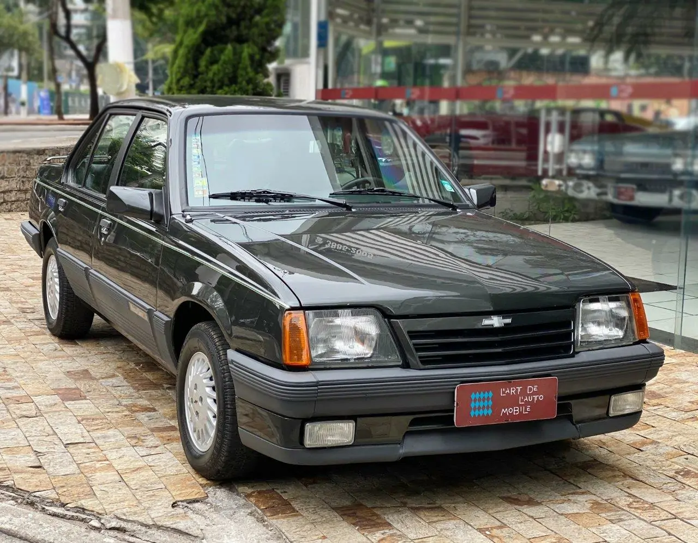
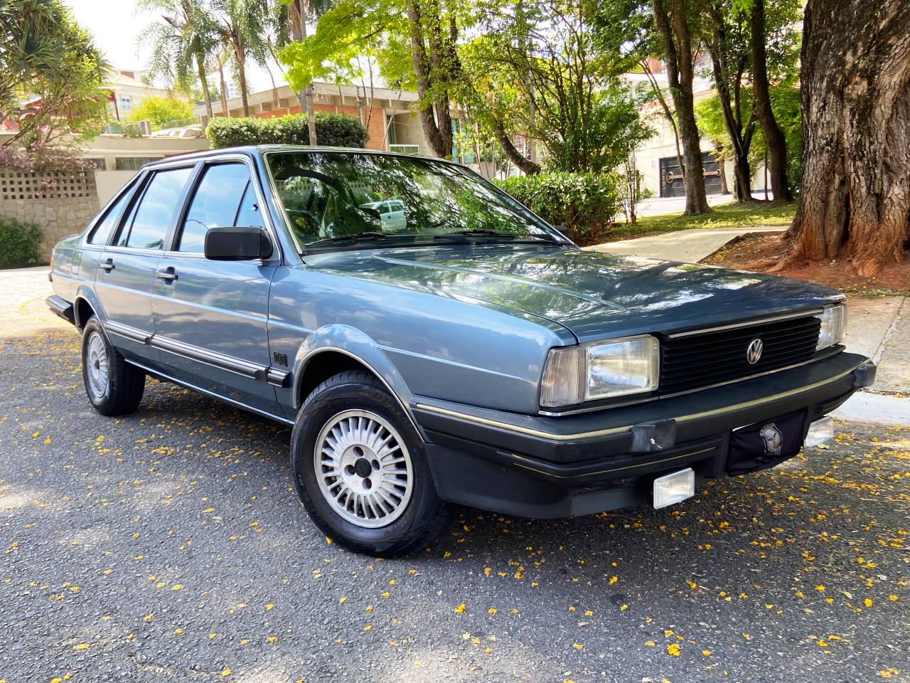
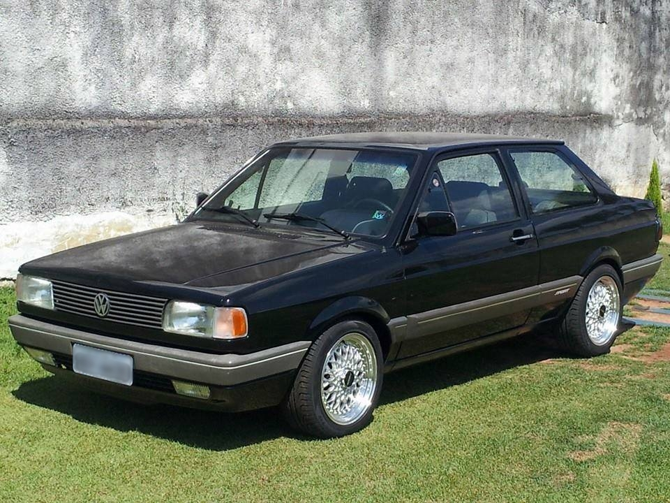
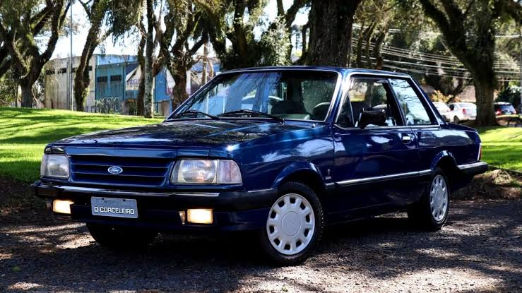
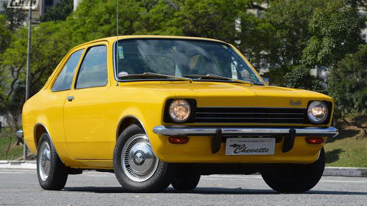
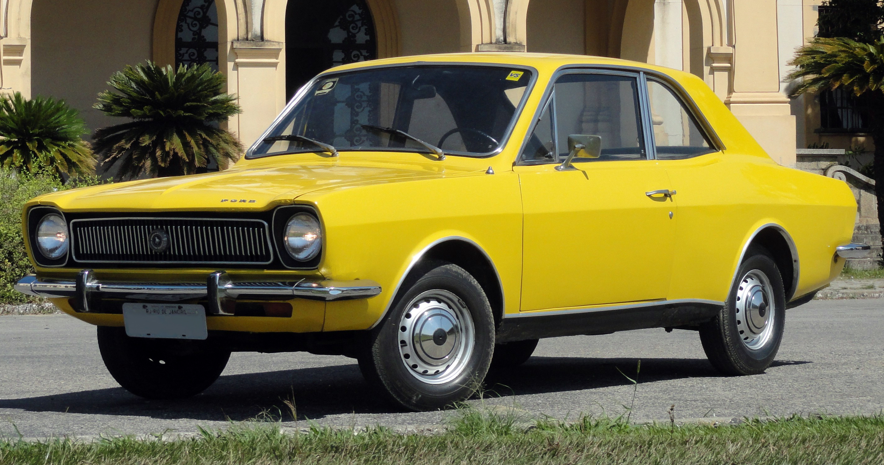
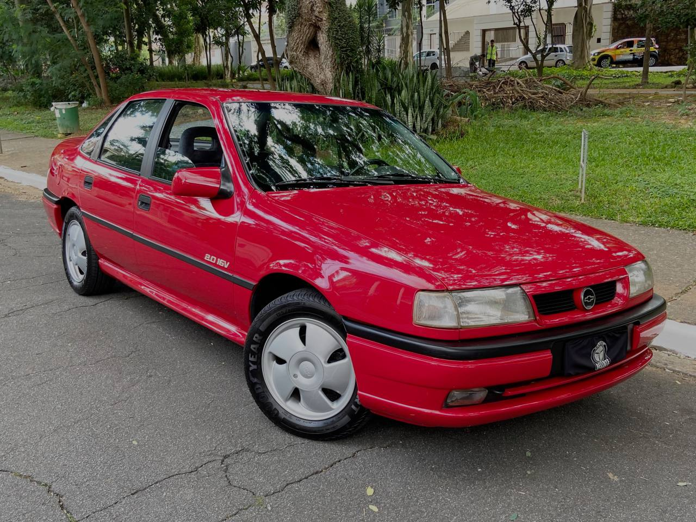
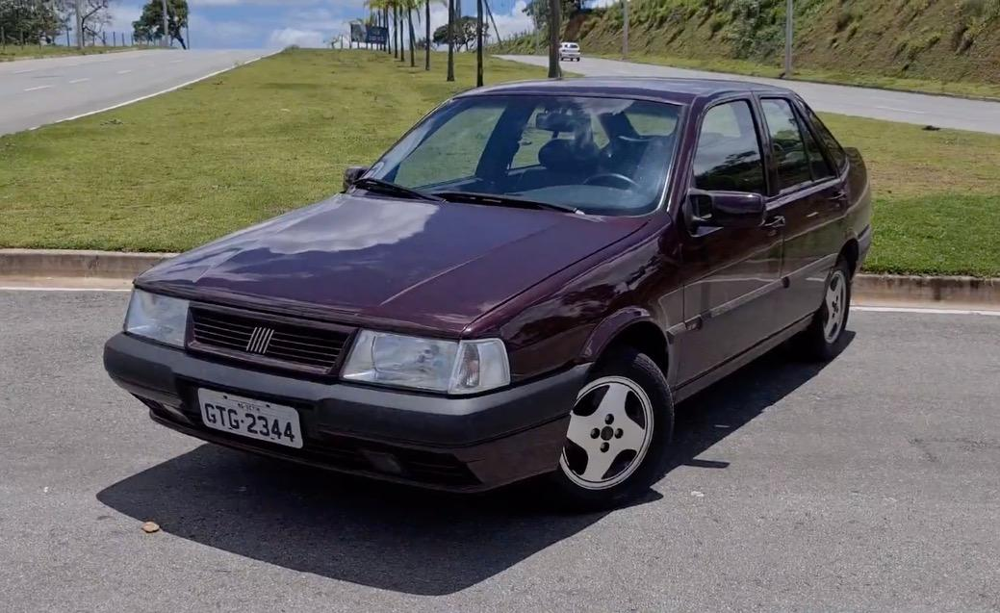
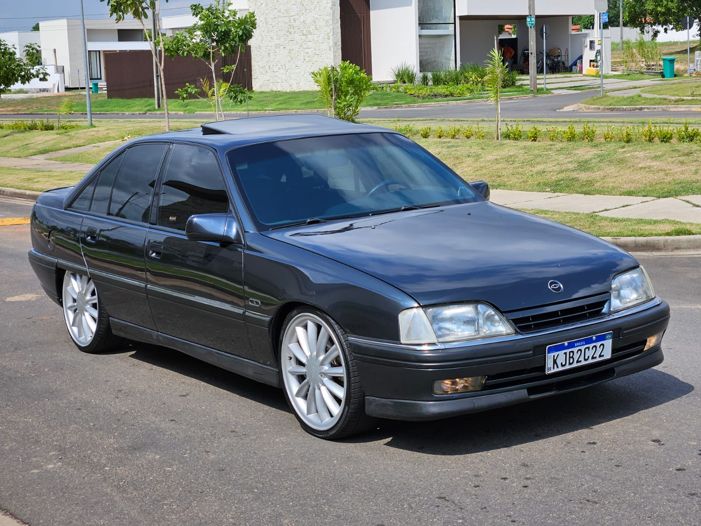

Chevrolet Opala (1968)

Visão geral do modelo
Sedan clássico com motor de seis cilindros e forte presença no mercado nacional da época.
Características principais
- Design clássico e elegante
- Motor robusto e confiável
- Espaço interno confortável
- Bom desempenho para viagens
Chevrolet Monza (1982)

Visão geral do modelo
Modelo de estilo mais esportivo, com proposta urbana e visual marcante.
Características principais
- Visual esportivo e contemporâneo
- Motor ágil para estradas urbanas
- Interior confortável para quatro passageiros
- Boa dirigibilidade e estabilidade
Volkswagen Santana (1984)

Visão geral do modelo
Sedan robusto, com foco em confiabilidade e conforto para uso diário.
Características principais
- Construção sólida e durável
- Conforto reforçado para famílias
- Baixa manutenção e confiabilidade
- Ótima estabilidade em rodovias
Volkswagen Voyage (1981)

Visão geral do modelo
Modelo simples e prático, conhecido pela economia e pela boa aceitação popular.
Características principais
- Fácil manutenção e baixo custo
- Design funcional e eficiente
- Economia de combustível
- Ampla rede de peças de reposição
Ford Del Rey (1981)

Visão geral do modelo
Versão de entrada da Ford, com proposta confortável e uso familiar.
Características principais
- Conforto familiar em um modelo acessível
- Estabilidade e segurança para o dia a dia
- Seu espaço interno comporta bem a família
- Desempenho confiável em trajetos urbanos
Chevrolet Chevette (1973)

Visão geral do modelo
Carro pequeno, econômico e de grande utilidade para o uso urbano da época.
Características principais
- Ótima economia para uso urbano
- Dimensões compactas e manobrabilidade
- Design simples e prático
- Boa aceitação popular
Ford Corcel (1968)

Visão geral do modelo
Modelo icônico da Ford, com desenho simples e forte presença popular.
Características principais
- Presença marcante e estilo reconhecível
- Manutenção simples e acessível
- Robustez para uso diário
- Espaço interno generoso para a categoria
Chevrolet Vectra (1993)

Visão geral do modelo
Modelo mais moderno da lista, com foco em conforto, espaço e dirigibilidade.
Características principais
- Interior espaçoso e confortável
- Bom equilíbrio entre desempenho e economia
- Excelente estabilidade em estrada
- Acabamento mais moderno para a época
Fiat Tempra (1991)

Visão geral do modelo
Modelo de referência na época, com acabamento mais refinado e proposta familiar.
Características principais
- Acabamento refinado para sua categoria
- Bom espaço interno e ergonomia
- Proposta familiar com conforto adicional
- Dirigibilidade suave e estável
Chevrolet Omega (1992)

Visão geral do modelo
Modelo executivo com maior presença, espaço interno e proposta mais sofisticada.
Características principais
- Design moderno e elegante
- Motor potente e eficiente
- Espaço interno generoso
- Conforto premium para todos os passageiros